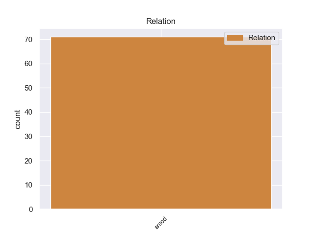
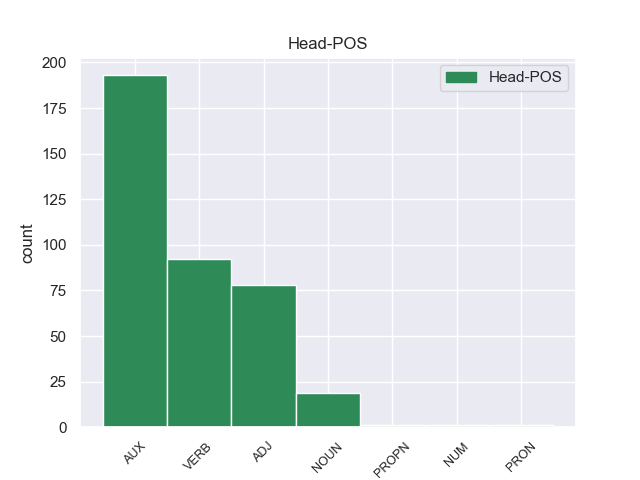
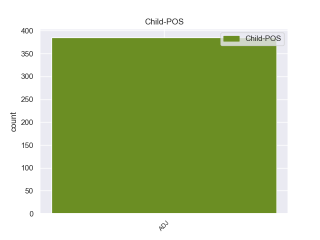

Distribution of features within this leaf



Agreement Rules sorted by frequency.
- When the dependent token is the copula(cop) of the head token, and the dependent token is ADJ.
1 Αυτό _ _ _ _ 0 _ _ _
2 μπορεί _ _ _ _ 0 _ _ _
3 να _ _ _ _ 0 _ _ _
4 μην _ _ _ _ 0 _ _ _
5 οδηγήσει _ _ _ _ 0 _ _ _
6 σ _ _ _ _ 0 _ _ _
7 τη _ _ _ _ 0 _ _ _
8 λήξη _ _ _ _ 0 _ _ _
9 του _ _ _ _ 0 _ _ _
10 εν _ _ _ _ 0 _ _ _
11 λόγω _ _ _ _ 0 _ _ _
12 ζητήματος _ _ _ _ 0 _ _ _
13 αλλά _ _ _ _ 0 _ _ _
14 , _ _ _ _ 0 _ _ _
15 σ _ _ _ _ 0 _ _ _
16 τη _ _ _ _ 0 _ _ _
17 μορφή _ _ _ _ 0 _ _ _
18 υπό _ _ _ _ 0 _ _ _
19 την _ _ _ _ 0 _ _ _
20 οποία _ _ _ _ 0 _ _ _
21 την _ _ _ _ 0 _ _ _
22 λάβαμε _ _ _ _ 0 _ _ _
23 , _ _ _ _ 0 _ _ _
24 αυτή _ _ _ _ 0 _ _ _
25 η _ _ _ _ 0 _ _ _
26 αίτηση _ _ _ _ 0 _ _ _
27 άρσης _ _ _ _ 0 _ _ _
28 της _ _ _ _ 0 _ _ _
29 ασυλίας _ _ _ _ 0 _ _ _
30 ήταν είμαι AUX AUX Aspect=Imp|Mood=Ind|Number=Sing|Person=3|Tense=Past|VerbForm=Fin|Voice=Pass 0 _ _ _
31 , _ _ _ _ 0 _ _ _
32 κατά _ _ _ _ 0 _ _ _
33 την _ _ _ _ 0 _ _ _
34 άποψη _ _ _ _ 0 _ _ _
35 της _ _ _ _ 0 _ _ _
36 Επιτροπής _ _ _ _ 0 _ _ _
37 Νομικών _ _ _ _ 0 _ _ _
38 Θεμάτων _ _ _ _ 0 _ _ _
39 , _ _ _ _ 0 _ _ _
40 απαράδεκτη απαράδεκτος ADJ ADJ Case=Nom|Gender=Fem|Number=Sing 30 cop _ SpaceAfter=No
41 , _ _ _ _ 0 _ _ _
42 άποψη _ _ _ _ 0 _ _ _
43 την _ _ _ _ 0 _ _ _
44 οποία _ _ _ _ 0 _ _ _
45 συνιστώ _ _ _ _ 0 _ _ _
46 σ _ _ _ _ 0 _ _ _
47 το _ _ _ _ 0 _ _ _
48 Σώμα _ _ _ _ 0 _ _ _
49 να _ _ _ _ 0 _ _ _
50 υιοθετήσει _ _ _ _ 0 _ _ _
51 . _ _ _ _ 0 _ _ _
1 Τα _ _ _ _ 0 _ _ _
2 εγκλήματα _ _ _ _ 0 _ _ _
3 είναι _ _ _ _ 0 _ _ _
4 σοβαρά _ _ _ _ 0 _ _ _
5 και _ _ _ _ 0 _ _ _
6 ανήκουν _ _ _ _ 0 _ _ _
7 σε _ _ _ _ 0 _ _ _
8 μια _ _ _ _ 0 _ _ _
9 κατηγορία _ _ _ _ 0 _ _ _
10 για _ _ _ _ 0 _ _ _
11 την _ _ _ _ 0 _ _ _
12 οποία _ _ _ _ 0 _ _ _
13 κανονικά _ _ _ _ 0 _ _ _
14 δεν _ _ _ _ 0 _ _ _
15 προσφέρεται _ _ _ _ 0 _ _ _
16 βουλευτική _ _ _ _ 0 _ _ _
17 ασυλία _ _ _ _ 0 _ _ _
18 , _ _ _ _ 0 _ _ _
19 επειδή _ _ _ _ 0 _ _ _
20 δεν _ _ _ _ 0 _ _ _
21 αφορούν _ _ _ _ 0 _ _ _
22 τις _ _ _ _ 0 _ _ _
23 συνήθεις συνήθης ADJ ADJ Case=Acc|Gender=Fem|Number=Plur 0 _ _ _
24 και _ _ _ _ 0 _ _ _
25 προσήκουσες προσήκων ADJ ADJ Case=Acc|Gender=Fem|Number=Plur 23 conj _ _
26 δραστηριότητες _ _ _ _ 0 _ _ _
27 βουλευτή _ _ _ _ 0 _ _ _
28 του _ _ _ _ 0 _ _ _
29 Σώματος _ _ _ _ 0 _ _ _
30 , _ _ _ _ 0 _ _ _
31 ή _ _ _ _ 0 _ _ _
32 πολιτικού _ _ _ _ 0 _ _ _
33 που _ _ _ _ 0 _ _ _
34 δραστηριοποιείται _ _ _ _ 0 _ _ _
35 σε _ _ _ _ 0 _ _ _
36 μια _ _ _ _ 0 _ _ _
37 δημοκρατική _ _ _ _ 0 _ _ _
38 κοινωνία _ _ _ _ 0 _ _ _
39 . _ _ _ _ 0 _ _ _
1 Σ _ _ _ _ 0 _ _ _
2 την _ _ _ _ 0 _ _ _
3 παρούσα _ _ _ _ 0 _ _ _
4 μορφή _ _ _ _ 0 _ _ _
5 της _ _ _ _ 0 _ _ _
6 , _ _ _ _ 0 _ _ _
7 η _ _ _ _ 0 _ _ _
8 αίτηση _ _ _ _ 0 _ _ _
9 άρσης _ _ _ _ 0 _ _ _
10 της _ _ _ _ 0 _ _ _
11 ασυλίας _ _ _ _ 0 _ _ _
12 παρουσιάζεται παρουσιάζω VERB VERB Aspect=Imp|Mood=Ind|Number=Sing|Person=3|Tense=Pres|VerbForm=Fin|Voice=Pass 0 _ _ _
13 απαράδεκτα _ _ _ _ 0 _ _ _
14 ασαφής ασαφής ADJ ADJ Case=Nom|Gender=Masc|Number=Sing 12 xcomp _ SpaceAfter=No
15 . _ _ _ _ 0 _ _ _
1 Την _ _ _ _ 0 _ _ _
2 μεθεπομένη μεθεπόμενος ADJ ADJ Case=Acc|Gender=Fem|Number=Sing 3 obl _ _
3 σχημάτισε σχηματίζω VERB VERB Aspect=Perf|Mood=Ind|Number=Sing|Person=3|Tense=Past|VerbForm=Fin|Voice=Act 0 _ _ _
4 κυβέρνηση _ _ _ _ 0 _ _ _
5 ο _ _ _ _ 0 _ _ _
6 Δημήτριος _ _ _ _ 0 _ _ _
7 Ράλλης _ _ _ _ 0 _ _ _
8 , _ _ _ _ 0 _ _ _
9 παραιτήθηκε _ _ _ _ 0 _ _ _
10 ο _ _ _ _ 0 _ _ _
11 Κουντουριώτης _ _ _ _ 0 _ _ _
12 κι _ _ _ _ 0 _ _ _
13 έγινε _ _ _ _ 0 _ _ _
14 αντιβασίλισσα _ _ _ _ 0 _ _ _
15 η _ _ _ _ 0 _ _ _
16 βασιλομήτωρ _ _ _ _ 0 _ _ _
17 Όλγα _ _ _ _ 0 _ _ _
18 μέχρι _ _ _ _ 0 _ _ _
19 να _ _ _ _ 0 _ _ _
20 γίνει _ _ _ _ 0 _ _ _
21 δημοψήφισμα _ _ _ _ 0 _ _ _
22 , _ _ _ _ 0 _ _ _
23 το _ _ _ _ 0 _ _ _
24 οποίο _ _ _ _ 0 _ _ _
25 θα _ _ _ _ 0 _ _ _
26 επανέφερε _ _ _ _ 0 _ _ _
27 τον _ _ _ _ 0 _ _ _
28 εξόριστο _ _ _ _ 0 _ _ _
29 Κωνσταντίνο _ _ _ _ 0 _ _ _
30 . _ _ _ _ 0 _ _ _
1 πρόκειται _ _ _ _ 0 _ _ _
2 για _ _ _ _ 0 _ _ _
3 αυτό _ _ _ _ 0 _ _ _
4 το _ _ _ _ 0 _ _ _
5 οποίο _ _ _ _ 0 _ _ _
6 αποκαλύφθηκε _ _ _ _ 0 _ _ _
7 κατά _ _ _ _ 0 _ _ _
8 τη _ _ _ _ 0 _ _ _
9 διάρκεια _ _ _ _ 0 _ _ _
10 αυτής _ _ _ _ 0 _ _ _
11 της _ _ _ _ 0 _ _ _
12 διαδικασίας _ _ _ _ 0 _ _ _
13 , _ _ _ _ 0 _ _ _
14 ότι _ _ _ _ 0 _ _ _
15 ο _ _ _ _ 0 _ _ _
16 Εισαγγελέας _ _ _ _ 0 _ _ _
17 κάποια _ _ _ _ 0 _ _ _
18 στιγμή _ _ _ _ 0 _ _ _
19 ζήτησε _ _ _ _ 0 _ _ _
20 από _ _ _ _ 0 _ _ _
21 την _ _ _ _ 0 _ _ _
22 Πρόεδρο πρόεδρος NOUN NOUN Case=Acc|Gender=Fem|Number=Sing 0 _ _ _
23 του _ _ _ _ 0 _ _ _
24 Σώματος _ _ _ _ 0 _ _ _
25 , _ _ _ _ 0 _ _ _
26 την _ _ _ _ 0 _ _ _
27 προκάτοχό προκάτοχος ADJ ADJ Case=Acc|Gender=Fem|Number=Sing 22 appos _ _
28 σας _ _ _ _ 0 _ _ _
29 , _ _ _ _ 0 _ _ _
30 λεπτομέρειες _ _ _ _ 0 _ _ _
31 για _ _ _ _ 0 _ _ _
32 την _ _ _ _ 0 _ _ _
33 ψήφο _ _ _ _ 0 _ _ _
34 που _ _ _ _ 0 _ _ _
35 έχουν _ _ _ _ 0 _ _ _
36 δώσει _ _ _ _ 0 _ _ _
37 οι _ _ _ _ 0 _ _ _
38 δύο _ _ _ _ 0 _ _ _
39 συγκεκριμένοι _ _ _ _ 0 _ _ _
40 βουλευτές _ _ _ _ 0 _ _ _
41 προκειμένου _ _ _ _ 0 _ _ _
42 να _ _ _ _ 0 _ _ _
43 διευκρινιστεί _ _ _ _ 0 _ _ _
44 περαιτέρω _ _ _ _ 0 _ _ _
45 η _ _ _ _ 0 _ _ _
46 πιθανότητα _ _ _ _ 0 _ _ _
47 να _ _ _ _ 0 _ _ _
48 είχαν _ _ _ _ 0 _ _ _
49 ασκήσει _ _ _ _ 0 _ _ _
50 αθέμιτη _ _ _ _ 0 _ _ _
51 επιρροή _ _ _ _ 0 _ _ _
52 . _ _ _ _ 0 _ _ _
1 Εδώ _ _ _ _ 0 _ _ _
2 και _ _ _ _ 0 _ _ _
3 ενάμισι _ _ _ _ 0 _ _ _
4 χρόνο _ _ _ _ 0 _ _ _
5 κοιτάζουμε κοιτάζω VERB VERB Aspect=Imp|Mood=Ind|Number=Plur|Person=1|Tense=Pres|VerbForm=Fin|Voice=Act 0 _ _ _
6 άπραγοι άπραγος ADJ ADJ Case=Acc|Gender=Masc|Number=Plur 5 advcl _ _
7 τον _ _ _ _ 0 _ _ _
8 εντελώς _ _ _ _ 0 _ _ _
9 άνισο _ _ _ _ 0 _ _ _
10 πόλεμο _ _ _ _ 0 _ _ _
11 που _ _ _ _ 0 _ _ _
12 διεξάγουν _ _ _ _ 0 _ _ _
13 αυτοί _ _ _ _ 0 _ _ _
14 οι _ _ _ _ 0 _ _ _
15 δύο _ _ _ _ 0 _ _ _
16 αντίπαλοι _ _ _ _ 0 _ _ _
17 μεταξύ _ _ _ _ 0 _ _ _
18 τους _ _ _ _ 0 _ _ _
19 , _ _ _ _ 0 _ _ _
20 κοιτάζουμε _ _ _ _ 0 _ _ _
21 τα _ _ _ _ 0 _ _ _
22 τανκς _ _ _ _ 0 _ _ _
23 των _ _ _ _ 0 _ _ _
24 Ισραηλινών _ _ _ _ 0 _ _ _
25 να _ _ _ _ 0 _ _ _
26 καταστρέφουν _ _ _ _ 0 _ _ _
27 σπίτια _ _ _ _ 0 _ _ _
28 και _ _ _ _ 0 _ _ _
29 να _ _ _ _ 0 _ _ _
30 σκοτώνουν _ _ _ _ 0 _ _ _
31 παλαιστίνιους _ _ _ _ 0 _ _ _
32 πολίτες _ _ _ _ 0 _ _ _
33 . _ _ _ _ 0 _ _ _
1 Εάν _ _ _ _ 0 _ _ _
2 παραμείνει _ _ _ _ 0 _ _ _
3 η _ _ _ _ 0 _ _ _
4 διατύπωση διατύπωση NOUN NOUN Case=Nom|Gender=Fem|Number=Sing 0 _ _ _
5 " _ _ _ _ 0 _ _ _
6 η _ _ _ _ 0 _ _ _
7 πλέον _ _ _ _ 0 _ _ _
8 οικονομικά _ _ _ _ 0 _ _ _
9 συμφέρουσα συμφέρων ADJ ADJ Case=Nom|Gender=Fem|Number=Sing 4 nmod _ _
10 για _ _ _ _ 0 _ _ _
11 την _ _ _ _ 0 _ _ _
12 αρχή _ _ _ _ 0 _ _ _
13 που _ _ _ _ 0 _ _ _
14 συνάπτει _ _ _ _ 0 _ _ _
15 τη _ _ _ _ 0 _ _ _
16 σύμβαση _ _ _ _ 0 _ _ _
17 " _ _ _ _ 0 _ _ _
18 , _ _ _ _ 0 _ _ _
19 αυτό _ _ _ _ 0 _ _ _
20 σημαίνει _ _ _ _ 0 _ _ _
21 ότι _ _ _ _ 0 _ _ _
22 η _ _ _ _ 0 _ _ _
23 αρχή _ _ _ _ 0 _ _ _
24 που _ _ _ _ 0 _ _ _
25 συνάπτει _ _ _ _ 0 _ _ _
26 μία _ _ _ _ 0 _ _ _
27 σύμβαση _ _ _ _ 0 _ _ _
28 δεν _ _ _ _ 0 _ _ _
29 θα _ _ _ _ 0 _ _ _
30 χρειάζεται _ _ _ _ 0 _ _ _
31 να _ _ _ _ 0 _ _ _
32 λαμβάνει _ _ _ _ 0 _ _ _
33 υπόψη _ _ _ _ 0 _ _ _
34 σε _ _ _ _ 0 _ _ _
35 μία _ _ _ _ 0 _ _ _
36 ευρύτερη _ _ _ _ 0 _ _ _
37 προοπτική _ _ _ _ 0 _ _ _
38 ούτε _ _ _ _ 0 _ _ _
39 τις _ _ _ _ 0 _ _ _
40 περιβαλλοντικές _ _ _ _ 0 _ _ _
41 ούτε _ _ _ _ 0 _ _ _
42 και _ _ _ _ 0 _ _ _
43 άλλες _ _ _ _ 0 _ _ _
44 πτυχές _ _ _ _ 0 _ _ _
45 , _ _ _ _ 0 _ _ _
46 όπως _ _ _ _ 0 _ _ _
47 το _ _ _ _ 0 _ _ _
48 κοινωνικό _ _ _ _ 0 _ _ _
49 συμφέρον _ _ _ _ 0 _ _ _
50 και _ _ _ _ 0 _ _ _
51 τον _ _ _ _ 0 _ _ _
52 κύκλο _ _ _ _ 0 _ _ _
53 ζωής _ _ _ _ 0 _ _ _
54 των _ _ _ _ 0 _ _ _
55 αγαθών _ _ _ _ 0 _ _ _
56 που _ _ _ _ 0 _ _ _
57 προμηθεύεται _ _ _ _ 0 _ _ _
58 . _ _ _ _ 0 _ _ _
1 Συνεπώς _ _ _ _ 0 _ _ _
2 , _ _ _ _ 0 _ _ _
3 η _ _ _ _ 0 _ _ _
4 ΣΥΜΜΕΤΡΙΑ _ _ _ _ 0 _ _ _
5 πρέπει _ _ _ _ 0 _ _ _
6 να _ _ _ _ 0 _ _ _
7 εφαρμοσθεί _ _ _ _ 0 _ _ _
8 το _ _ _ _ 0 _ _ _
9 συντομότερο σύντομος ADJ ADJ Case=Nom|Degree=Cmp|Gender=Neut|Number=Sing 0 _ _ _
10 δυνατόν δυνατός ADJ ADJ Case=Nom|Gender=Neut|Number=Sing 9 advmod _ SpaceAfter=No
11 . _ _ _ _ 0 _ _ _
1 Ο _ _ _ _ 0 _ _ _
2 Υπουργός _ _ _ _ 0 _ _ _
3 Εσωτερικών _ _ _ _ 0 _ _ _
4 της _ _ _ _ 0 _ _ _
5 Γαλλίας _ _ _ _ 0 _ _ _
6 , _ _ _ _ 0 _ _ _
7 Κλώντ _ _ _ _ 0 _ _ _
8 Γκιάντ _ _ _ _ 0 _ _ _
9 , _ _ _ _ 0 _ _ _
10 δήλωσε _ _ _ _ 0 _ _ _
11 ότι _ _ _ _ 0 _ _ _
12 « _ _ _ _ 0 _ _ _
13 οι _ _ _ _ 0 _ _ _
14 Αρχές _ _ _ _ 0 _ _ _
15 είναι _ _ _ _ 0 _ _ _
16 αποφασισμένες _ _ _ _ 0 _ _ _
17 να _ _ _ _ 0 _ _ _
18 συλλάβουν _ _ _ _ 0 _ _ _
19 τον _ _ _ _ 0 _ _ _
20 δράστη δράστης NOUN NOUN Case=Acc|Gender=Masc|Number=Sing 0 _ _ _
21 ζωντανό ζωντανός ADJ ADJ Case=Acc|Gender=Masc|Number=Sing 20 acl _ SpaceAfter=No
22 » _ _ _ _ 0 _ _ _
23 . _ _ _ _ 0 _ _ _
Disagree Examples:
1 Προκειμένου _ _ _ _ 0 _ _ _
2 να _ _ _ _ 0 _ _ _
3 το _ _ _ _ 0 _ _ _
4 ενισχύσουν _ _ _ _ 0 _ _ _
5 , _ _ _ _ 0 _ _ _
6 οι _ _ _ _ 0 _ _ _
7 κάτοικοι _ _ _ _ 0 _ _ _
8 το _ _ _ _ 0 _ _ _
9 οχύρωσαν _ _ _ _ 0 _ _ _
10 με _ _ _ _ 0 _ _ _
11 τείχη _ _ _ _ 0 _ _ _
12 , _ _ _ _ 0 _ _ _
13 διάσπαρτα _ _ _ _ 0 _ _ _
14 με _ _ _ _ 0 _ _ _
15 πολεμίστρες _ _ _ _ 0 _ _ _
16 και _ _ _ _ 0 _ _ _
17 κανόνια _ _ _ _ 0 _ _ _
18 , _ _ _ _ 0 _ _ _
19 τα _ _ _ _ 0 _ _ _
20 οποία _ _ _ _ 0 _ _ _
21 ήταν είμαι AUX AUX Aspect=Imp|Mood=Ind|Number=Sing|Person=3|Tense=Past|VerbForm=Fin|Voice=Pass 0 _ _ _
22 ισχυρότατα ισχυρός ADJ ADJ Case=Nom|Degree=Sup|Gender=Neut|Number=Plur 21 cop _ _
23 και _ _ _ _ 0 _ _ _
24 πανύψηλα _ _ _ _ 0 _ _ _
25 . _ _ _ _ 0 _ _ _
1 Προκειμένου _ _ _ _ 0 _ _ _
2 να _ _ _ _ 0 _ _ _
3 το _ _ _ _ 0 _ _ _
4 ενισχύσουν _ _ _ _ 0 _ _ _
5 , _ _ _ _ 0 _ _ _
6 οι _ _ _ _ 0 _ _ _
7 κάτοικοι _ _ _ _ 0 _ _ _
8 το _ _ _ _ 0 _ _ _
9 οχύρωσαν _ _ _ _ 0 _ _ _
10 με _ _ _ _ 0 _ _ _
11 τείχη _ _ _ _ 0 _ _ _
12 , _ _ _ _ 0 _ _ _
13 διάσπαρτα _ _ _ _ 0 _ _ _
14 με _ _ _ _ 0 _ _ _
15 πολεμίστρες _ _ _ _ 0 _ _ _
16 και _ _ _ _ 0 _ _ _
17 κανόνια _ _ _ _ 0 _ _ _
18 , _ _ _ _ 0 _ _ _
19 τα _ _ _ _ 0 _ _ _
20 οποία _ _ _ _ 0 _ _ _
21 ήταν είμαι AUX AUX Aspect=Imp|Mood=Ind|Number=Sing|Person=3|Tense=Past|VerbForm=Fin|Voice=Pass 0 _ _ _
22 ισχυρότατα _ _ _ _ 0 _ _ _
23 και _ _ _ _ 0 _ _ _
24 πανύψηλα πανύψηλος ADJ ADJ Case=Nom|Gender=Neut|Number=Plur 21 conj _ SpaceAfter=No
25 . _ _ _ _ 0 _ _ _
1 Σ _ _ _ _ 0 _ _ _
2 το _ _ _ _ 0 _ _ _
3 εσωτερικό _ _ _ _ 0 _ _ _
4 του _ _ _ _ 0 _ _ _
5 φρουρίου _ _ _ _ 0 _ _ _
6 , _ _ _ _ 0 _ _ _
7 τα _ _ _ _ 0 _ _ _
8 σπίτια _ _ _ _ 0 _ _ _
9 ήταν είμαι AUX AUX Aspect=Imp|Mood=Ind|Number=Sing|Person=3|Tense=Past|VerbForm=Fin|Voice=Pass 0 _ _ _
10 μικρά μικρός ADJ ADJ Case=Nom|Gender=Neut|Number=Plur 9 cop _ _
11 και _ _ _ _ 0 _ _ _
12 χτισμένα _ _ _ _ 0 _ _ _
13 το _ _ _ _ 0 _ _ _
14 ένα _ _ _ _ 0 _ _ _
15 πολύ _ _ _ _ 0 _ _ _
16 κοντά _ _ _ _ 0 _ _ _
17 σ _ _ _ _ 0 _ _ _
18 το _ _ _ _ 0 _ _ _
19 άλλο _ _ _ _ 0 _ _ _
20 , _ _ _ _ 0 _ _ _
21 λόγω _ _ _ _ 0 _ _ _
22 έλλειψης _ _ _ _ 0 _ _ _
23 χώρου _ _ _ _ 0 _ _ _
24 . _ _ _ _ 0 _ _ _
1 Σ _ _ _ _ 0 _ _ _
2 το _ _ _ _ 0 _ _ _
3 εσωτερικό _ _ _ _ 0 _ _ _
4 του _ _ _ _ 0 _ _ _
5 φρουρίου _ _ _ _ 0 _ _ _
6 , _ _ _ _ 0 _ _ _
7 τα _ _ _ _ 0 _ _ _
8 σπίτια _ _ _ _ 0 _ _ _
9 ήταν είμαι AUX AUX Aspect=Imp|Mood=Ind|Number=Sing|Person=3|Tense=Past|VerbForm=Fin|Voice=Pass 0 _ _ _
10 μικρά _ _ _ _ 0 _ _ _
11 και _ _ _ _ 0 _ _ _
12 χτισμένα χτίζω ADJ ADJ Case=Nom|Gender=Neut|Number=Plur 9 conj _ _
13 το _ _ _ _ 0 _ _ _
14 ένα _ _ _ _ 0 _ _ _
15 πολύ _ _ _ _ 0 _ _ _
16 κοντά _ _ _ _ 0 _ _ _
17 σ _ _ _ _ 0 _ _ _
18 το _ _ _ _ 0 _ _ _
19 άλλο _ _ _ _ 0 _ _ _
20 , _ _ _ _ 0 _ _ _
21 λόγω _ _ _ _ 0 _ _ _
22 έλλειψης _ _ _ _ 0 _ _ _
23 χώρου _ _ _ _ 0 _ _ _
24 . _ _ _ _ 0 _ _ _
1 η _ _ _ _ 0 _ _ _
2 βία _ _ _ _ 0 _ _ _
3 που _ _ _ _ 0 _ _ _
4 ασκείται _ _ _ _ 0 _ _ _
5 σ _ _ _ _ 0 _ _ _
6 τον _ _ _ _ 0 _ _ _
7 πληθυσμό _ _ _ _ 0 _ _ _
8 και _ _ _ _ 0 _ _ _
9 ιδίως _ _ _ _ 0 _ _ _
10 σ _ _ _ _ 0 _ _ _
11 τις _ _ _ _ 0 _ _ _
12 γυναίκες _ _ _ _ 0 _ _ _
13 και _ _ _ _ 0 _ _ _
14 τα _ _ _ _ 0 _ _ _
15 παιδιά _ _ _ _ 0 _ _ _
16 είναι είμαι AUX AUX Aspect=Imp|Mood=Ind|Number=Plur|Person=3|Tense=Pres|VerbForm=Fin|Voice=Pass 0 _ _ _
17 απερίγραπτη απερίγραπτος ADJ ADJ Case=Nom|Gender=Fem|Number=Sing 16 cop _ SpaceAfter=No
18 . _ _ _ _ 0 _ _ _